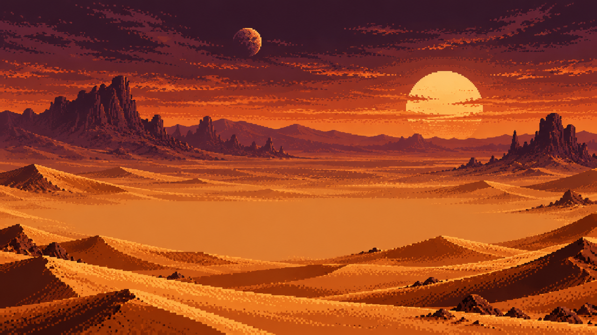
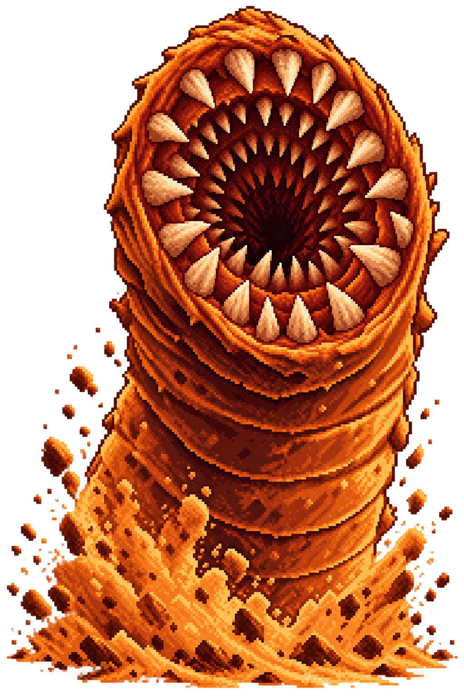
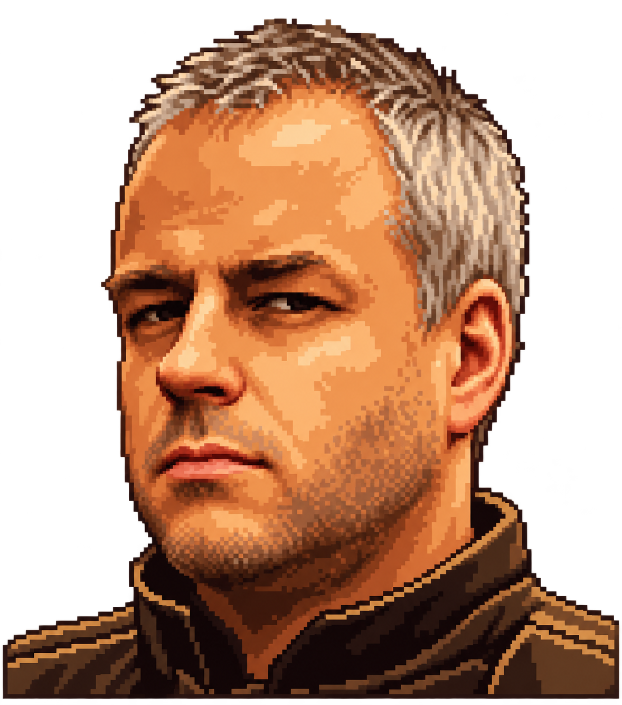

HOUSE OF TURENKI PRESENTS
JANNE 50
DUKE OF TURENKI



The Spice Must Flow. Puoli vuosisataa — ja legenda jatkuu.
CLASS: DESERT DUKELEVEL: 50TERRITORY: TURENKISTATUS: LEGENDARY



The Spice Must Flow. Puoli vuosisataa — ja legenda jatkuu.